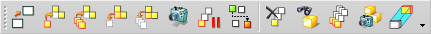

装配序列任务环境
单击装配序列  时，可进入序列任务环境。NX 主菜单选项和工具条包含对序列有用的选项。
时，可进入序列任务环境。NX 主菜单选项和工具条包含对序列有用的选项。
使用以下工具条可执行序列任务：
-
序列工具
显示最常见序列命令的按钮。

-
序列回放
控制序列回放和 .avi 电影导出。

-
序列分析
设置在移动期间发生碰撞或违反预先确定的测量要求时要执行的操作

要退出序列任务环境，请在装配序列工具条上单击完成序列  ，或选择任务→完成序列。
，或选择任务→完成序列。